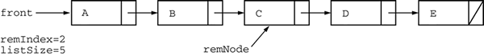
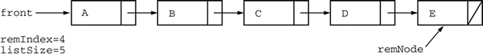
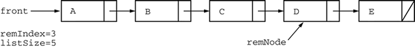

MyList |
|
|---|---|
|
Suppose myList is a linked list. A loop such as for (int k = 0; k < myList.size(); k++)
Object a = myList.get(k);
can be inefficient if the get method always starts at the front of the list to locate each element. This question describes a variant of a linked list data structure that can improve the efficiency of the loop. The ListNode class is used as part of the implementation of a class MyList that remembers the node and index of the most recently visited element of the list. If the index for the next get is greater than or equal to the remembered index, the traversal starts at the remembered node instead of the front of the list. For example, consider the following MyList that contains five elements. The call myList.get(2) returns the value C. The remembered node and remembered index will refer to the node at index 2 as shown in the diagram.  If the call myList.get(2) is executed again, the value C is returned again, but the traversal begins at the remNode position, instead of front, because the remembered index is 2. No other nodes are traversed because remNode is already at the correct position. A subsequent call myList.get(4) will start the traversal at the remNode position instead of front because the remembered index is 2. It will then move forward two nodes to retrieve the node at index 4 (the value E), set remNode to the new position, and update remIndex as shown in the following diagram.  Finally, a subsequent call myList.get(3) will start the traversal at
front because the remembered index is greater than the desired index.
Starting at front, it will move forward three nodes to retrieve the node
at index 3 (the value D), set remNode to the new position, and update
remIndex as shown in the  The partial declaration of the MyList class is shown below. public class MyList
{
private ListNode front; // first node of this list (null if empty)
private int listSize; // the number of elements in this list
private int remIndex; // the index of the remembered node
private ListNode remNode; // a reference to the node accessed by most recent call to get
/** Constructs an empty MyList.
*/
public MyList()
{
front = null;
remIndex = -1;
remNode = null;
listSize = 0;
}
/** Gets a value at a given index in this list.
* @param n the index at which to get a value
* Precondition: 0 . n < size()
* @return the object at the given index
* Postcondition: The remembered node and index refer to the node at index n
*/
public Object get(int n)
{ /* to be implemented in part (a) */ }
/** Adds a new node containing obj to the front of this list.
* @param obj the value to add to the list
*/
public void addFirst(Object obj)
{ /* to be implemented in part (b) */ }
/** @return the size of this list
*/
public int size()
{ return listSize; }
// There may be methods that are not shown.
}
Sample Output
|